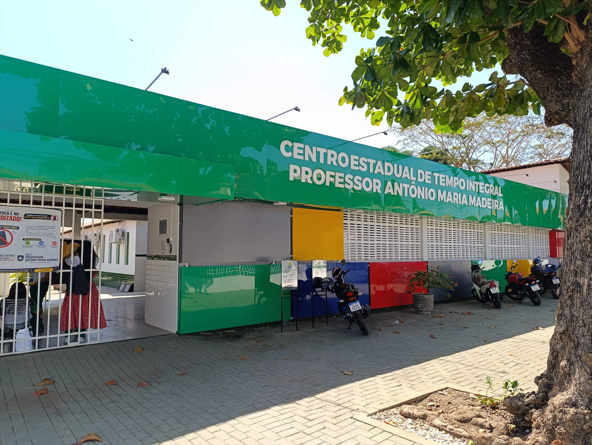

Contato
Vamos conversar?
A escola e a comunidade caminham juntas. Encontre orientações para tirar dúvidas e acompanhar a vida escolar.
Fale com a escola
Onde estamos
Bairro Parque Piauí
Teresina — Piauí
Atendimento na secretaria
Procure a secretaria para informações sobre matrícula, documentação, cursos e acompanhamento escolar.
Canais de atendimento
Telefone, e-mail e horários de atendimento serão incluídos após confirmação pela escola.

Dúvidas frequentes
Como obter informações sobre matrícula?
Consulte a secretaria para confirmar vagas, prazos e documentação do período letivo.
Onde conhecer os cursos e projetos?
Acesse a página de Cursos e Projetos e confirme com a secretaria a oferta vigente.
Como conhecer a estrutura da escola?
Veja as fotos da Galeria. Para uma visita presencial, procure a escola e combine a disponibilidade de atendimento.